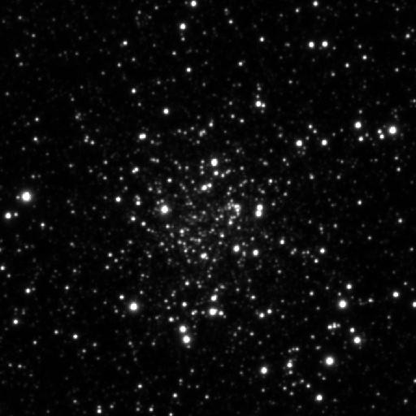
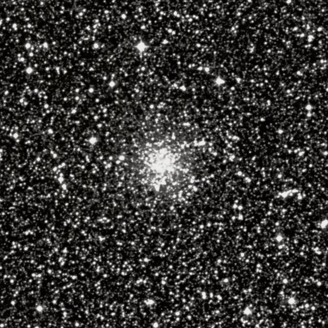

Palomar 8
- Name: Palomar 8
- Aliases: ESO 591-012 = C 1838-198
- Type: Globular Cluster
- Class: X
- RA: 18h 41m 29.9s
- Dec: -19° 49' 33"
- Constellation: Sgr
- Size: 4.7'
- Mag: 11.2V
- Brightest star: 15.4V
- Distance (Galactic center): 18000 l.y.
- Distance (sun): 42000 l.y.
PanSTARRS image:

Palomar 8 is well known as one the brightest of the 15 globular clusters found on the Palomar Observatory Sky Survey in 1950's. In the case of Pal 8, it was George Abell who made the discovery, who was one of the principal "observers", taking and examining plates on the sky survey. Two of the Palomar globulars turned out to be previously discovered visually -- Palomar 9 = NGC 6717 and Palomar 7 = IC 1276.
Palomar 8 is quite impressive through an 18-inch scope, but you certainly don't need a larger aperture to view this globular. Brian Skiff reported it visible in a 70mm Pronto at 55x and Les Dalrymple reported it as faintly visible in 15x80 binoculars from Australia.
Here are my notes through my 18-inch Starmaster --
225x: "Palomar 8 is moderately bright, round, ~3' diameter, with little or no central concentration. Four or five faint stars are scattered around the periphery."
434x: "The surface brightness is very irregular and mottled and the halo is no longer round but more ragged. A nice mag 14 double star is at the south edge and a couple of additional fainter stars scintillate in and out of visibility over the disc."
In a separate observation with my 18-inch I recorded "a dozen very faint stars resolved over the face of the cluster".
Palomar 8 is brighter and more evident visually than several of the NGC globulars, so the question remains is why wasn't it picked up visually by the Herschels in their sky surveys (John picked up NGC 6380, for example, as well as NGC 6749)?
It turns out E.E. Barnard discovered Palomar 8 visually on 3 July 1889 using the 12-inch refractor at Lick Observatory!
While carefully reading through his observing logs I was surprised to find it included Palomar 8, though he failed to report the discovery. He called it "small, round, gbM, 2' or 3', p[receding] 9 1/2 mag or 10m star. With 700x probably resolvable. It is likely a globular cluster. I can occasionally see the stars. Much compressed, 13 mag… With lower powers, it looks like a small faint comet or nebula."
There you go. Not only did Barnard discover this object with a 12", he realized it was likely a globular cluster and was able to partially resolve it!
Now you give it a go and let us know!
